Anotación 31 · imagen 9
CAJA_INCORRECTA: Delimita la botella completa, no la tapa.
Clase original: cap. Caja original: [357, 137, 432.29, 1460.78]. No corregida.
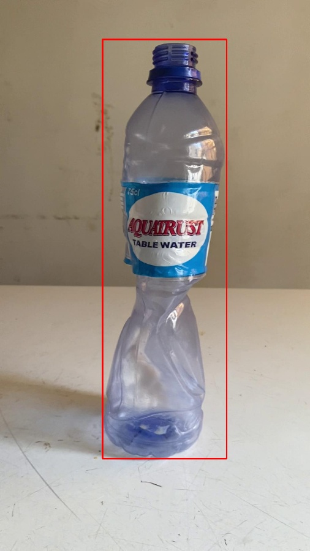
Entrenamiento detenido. Observaciones técnicas; no sustituyen adjudicación humana. No hay predicciones ni métricas nuevas.
Informe · Auditoría de cajasCAJA_INCORRECTA: Delimita la botella completa, no la tapa.
Clase original: cap. Caja original: [357, 137, 432.29, 1460.78]. No corregida.

CAJA_INCORRECTA: Delimita la botella completa, no la tapa.
Clase original: cap. Caja original: [170, 255, 123.38, 384.75]. No corregida.
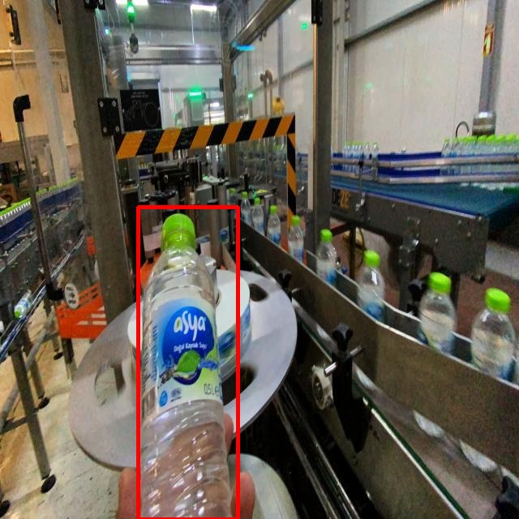
DUDOSA_REQUIERE_ADJUDICACION: Región de cuello/boca: no confirmar tapa física sin revisión humana.
Clase original: cap. Caja original: [977, 328, 40.37, 32.13]. No corregida.
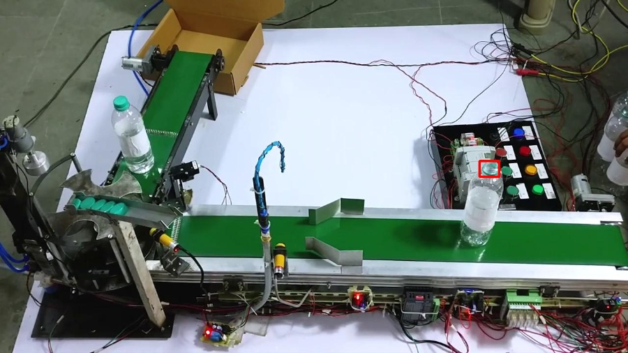
CAJA_INCORRECTA: Delimita la etiqueta del cuerpo; la tapa azul está fuera de la caja.
Clase original: cap. Caja original: [226, 267, 187.11, 134.6]. No corregida.
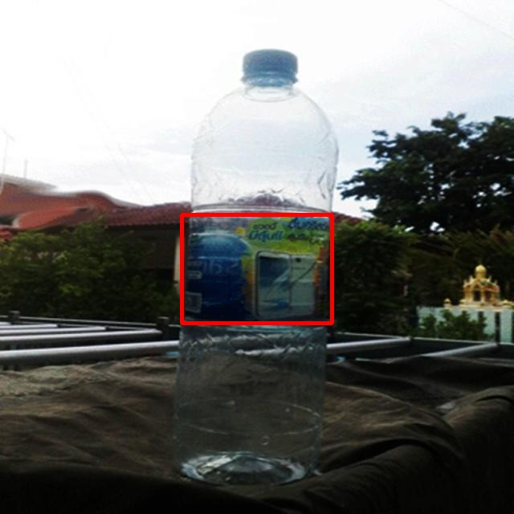
DUDOSA_REQUIERE_ADJUDICACION: Región de boca aparentemente abierta: requiere adjudicación humana.
Clase original: cap. Caja original: [817, 343, 43.82, 38.71]. No corregida.
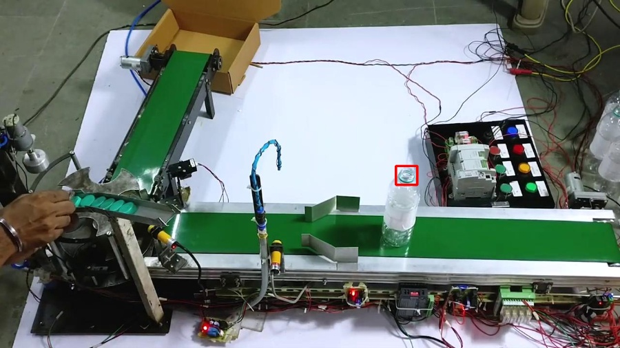
CAJA_INCORRECTA: Delimita la botella completa, no la tapa; marca Shutterstock visible.
Clase original: cap. Caja original: [168, 63, 101.88, 442.06]. No corregida.
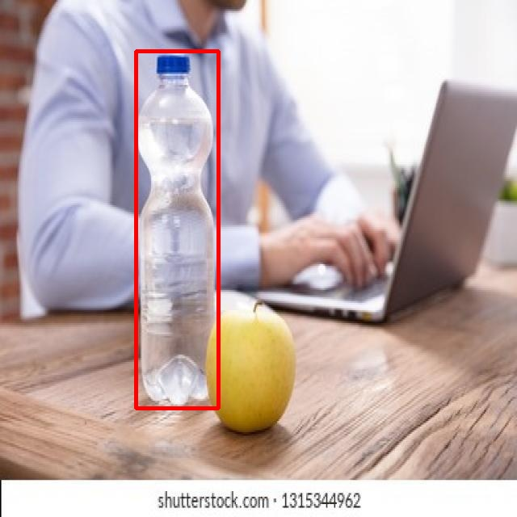
DUDOSA_REQUIERE_ADJUDICACION: Rosca/boca azul: no confirmar tapa física sin revisión humana.
Clase original: cap. Caja original: [534, 137, 188.97, 157.44]. No corregida.
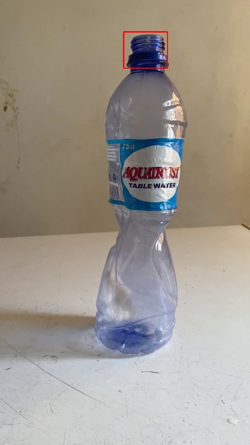
Una caja cap registrada para el primer plano. Hay tapas verdes visibles sin cajas al fondo. Debe definirse el alcance de evaluación o adjudicar las omisiones; no tratarlas automáticamente como negativos.
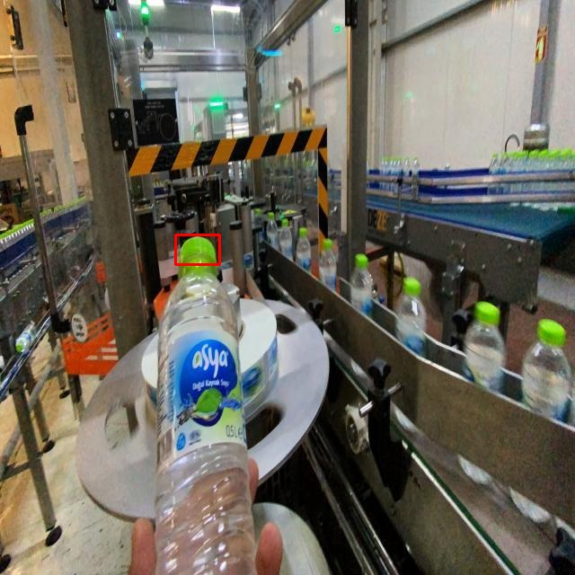
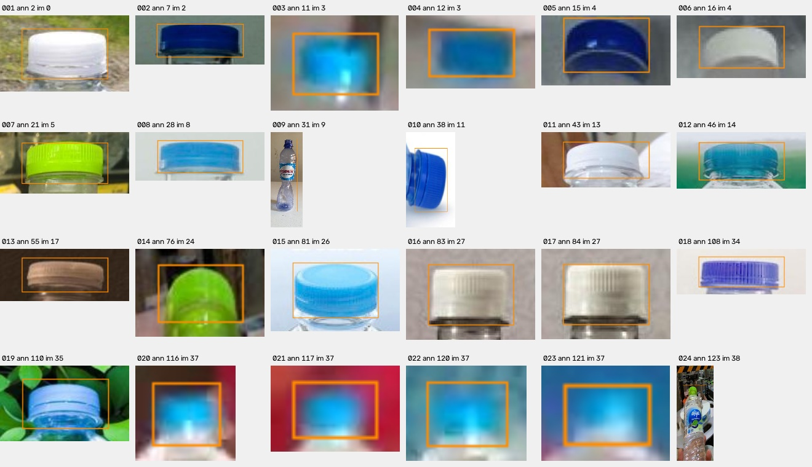
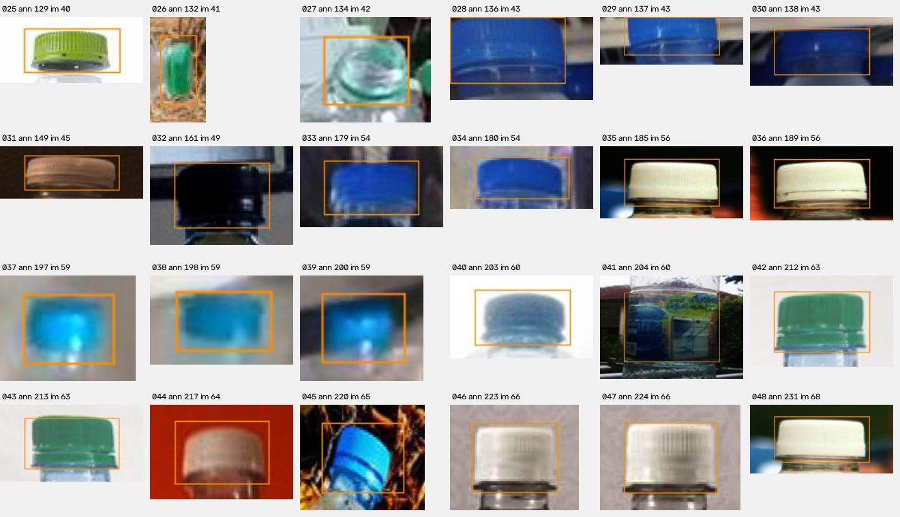
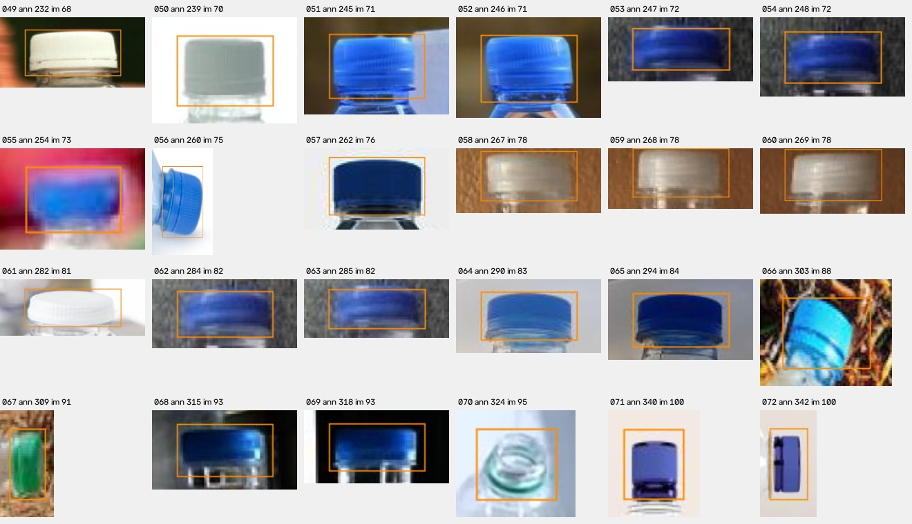
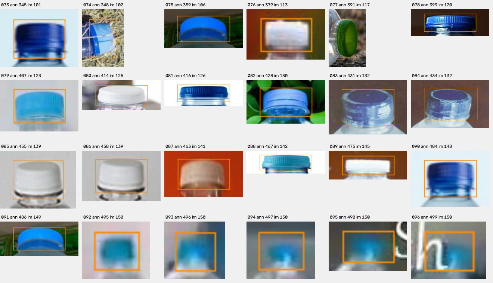
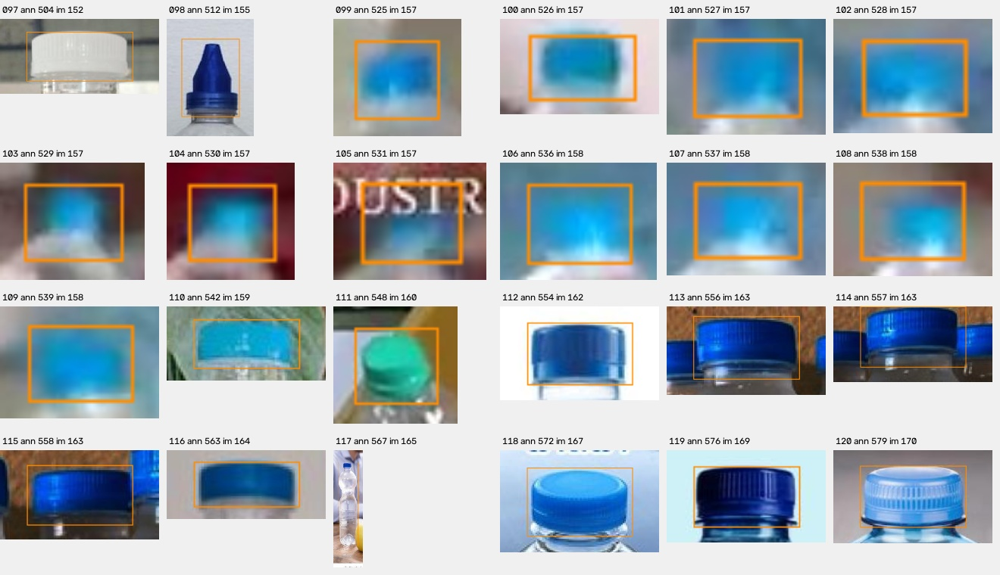
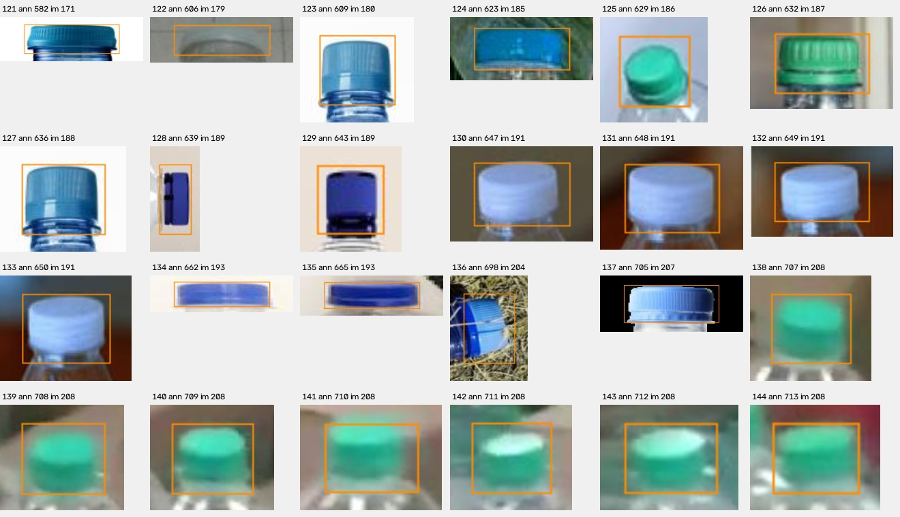
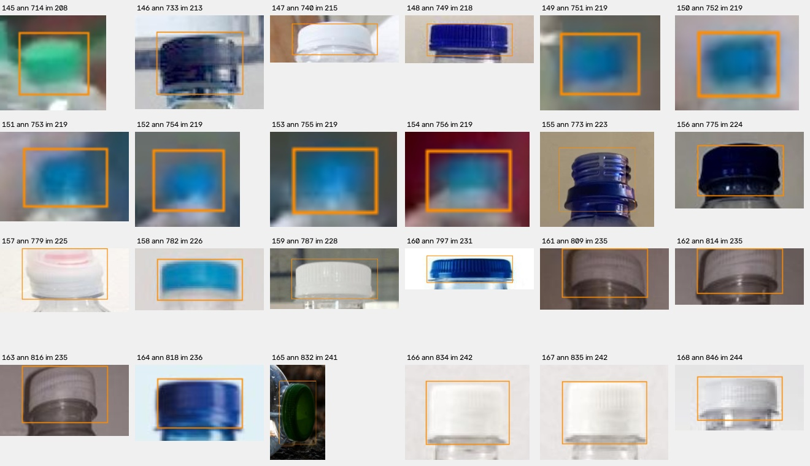
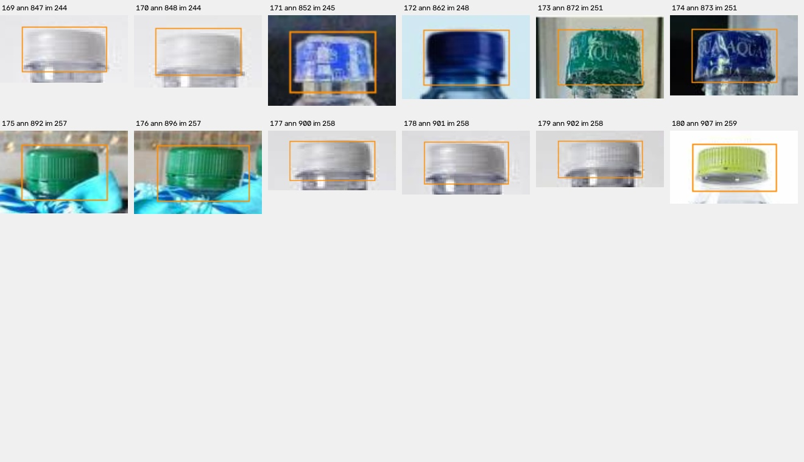
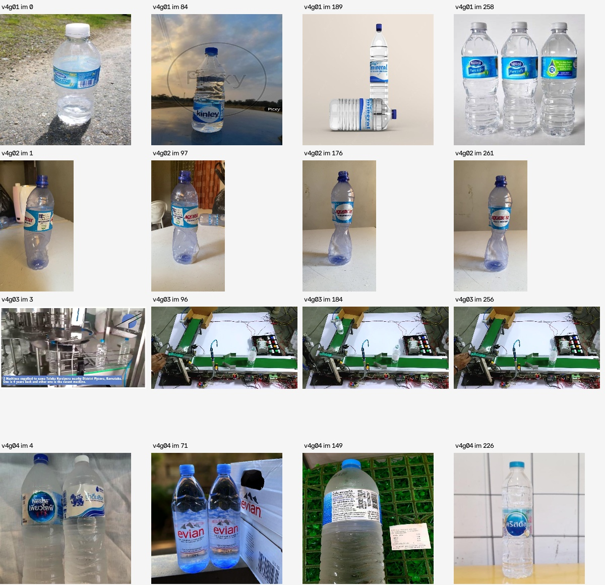
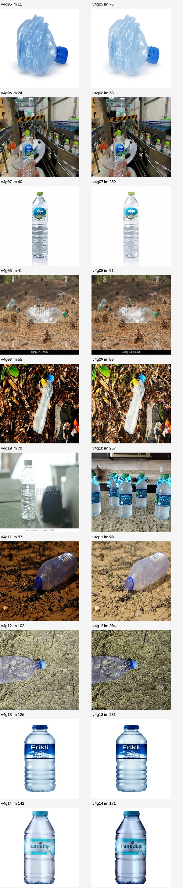